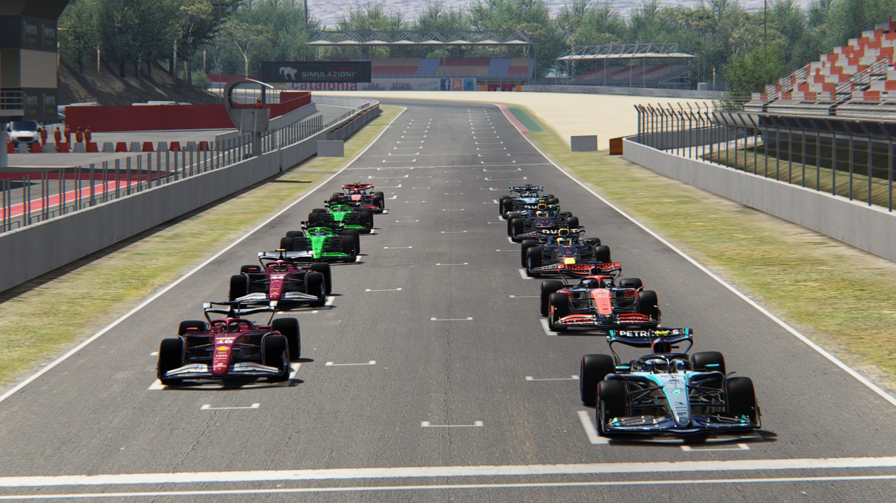

Leclerc Dominates in Barcelona; Hamilton Shines; Javad Salvages Podium
Barcelona GP, Spain - Round 17 of the 2027 Formula One World Championship
Charles Leclerc returned to winning form in Barcelona with a commanding drive that left no doubt about
Ferrari's superiority in the closing stages of the European leg. The Monegasque star controlled the race
from the front, set the fastest lap, and kept Lewis Hamilton at arm's length in a calm, clinical
performance.
Hamilton, meanwhile, delivered one of his best races of the season. The seven-time champion showed
impressive race pace, carving through traffic efficiently and keeping pressure on Leclerc until the very
end. Though Mercedes lacked outright speed, Hamilton executed a near-perfect race to finish a strong
second.
Championship leader Javad had a tougher afternoon. A slow middle stint and heavy tyre degradation
prevented him from fighting for the win, but he held firm under pressure from the Saubers and McLarens
to bring home an important third place — valuable points on a day where both Red Bulls imploded.
The midfield was electric all race long. Sauber delivered one of their most complete Sundays of the
season with Bortoleto P4 and Hülkenberg P5, both drivers showing excellent long-run consistency.
McLaren struggled for straight-line speed, leaving Piastri and Norris stuck in DRS trains for
most of the afternoon.
But the biggest shock of the day came from the Red Bull garage.
Verstappen suffered a catastrophic issue that dropped him eight laps down before retiring.
Tsunoda struggled from the start and eventually classified ten laps down after a late mechanical
problem forced him to crawl to the line.
Ferrari leaves Spain with momentum restored — and crucially, both cars back on the podium.
🔧 Verstappen & Tsunoda - What Happened?
Max Verstappen - Terminal Issue
Red Bull's nightmare began when Verstappen slowed dramatically on lap 8, reporting sudden power loss.
The team attempted resets, but the car repeatedly fell into low-power mode. Verstappen ran several laps
far off the pace before the team ultimately retired him eight laps down.
Yuki Tsunoda - Hydraulics Scare
Tsunoda experienced fluctuating brake pressure and gear-shift delays late in the race. Though he limped
to the finish, he lost five laps in the process and could never recover.
Red Bull scored zero points — a brutal blow in both championships.
🏁 Official Race Classification — Barcelona GP:
1. Charles Leclerc (Ferrari) — 14:04.699
2. Lewis Hamilton (Merecedes) — +08.427
3. Javad Nick (Ferrari) — +13.027
4. Gabriel Bortoleto (Sauber) — +25.277
5. Nico Hülkenberg (Sauber) — +30.615
6. Oscar Piastri (McLaren) — +1:30.531
7. Lando Norris (McLaren) — +1:35.734
8. George Russell (Merecedes) — +1 Lap
9. Yuki Tsunoda (RedBull) — DNF
10. Max Verstappen (RedBull) — DNF